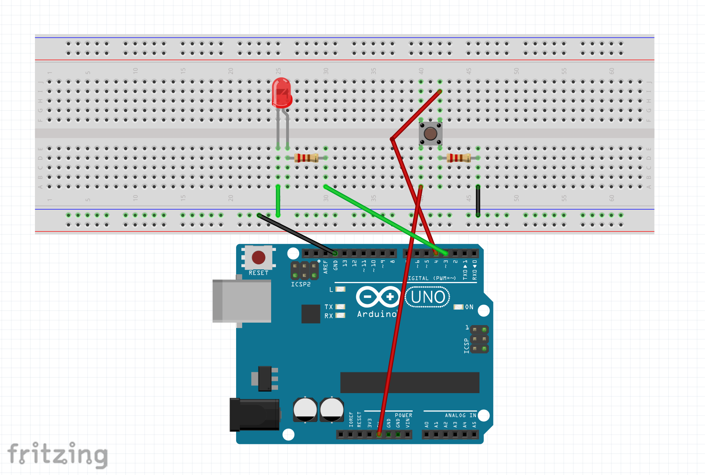
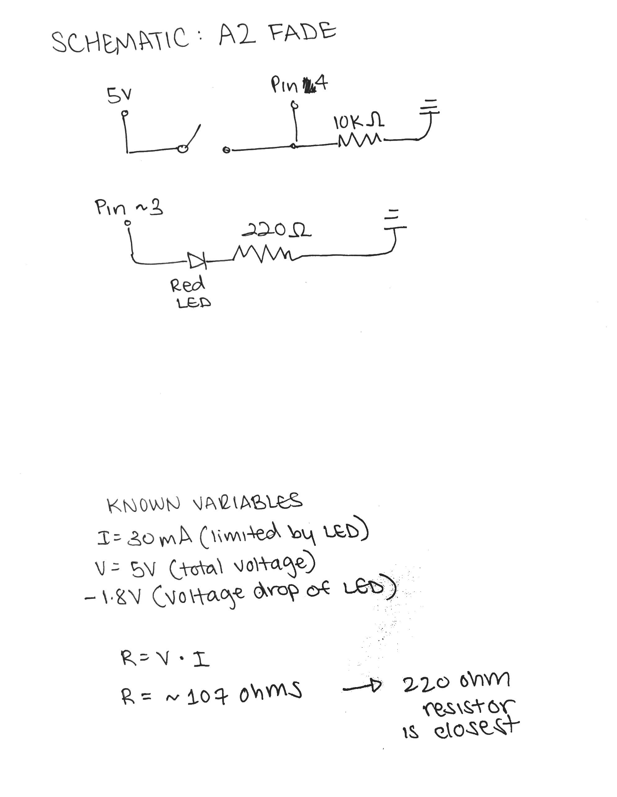
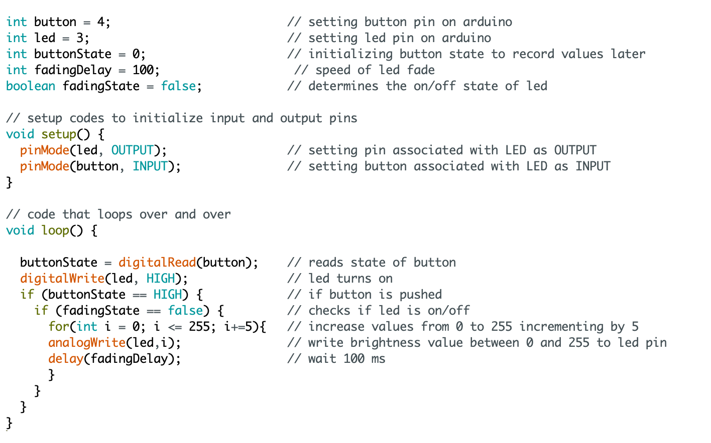

Assignment 2: Fade!
"Create a schematic, circuit, and code that uses LEDs, a button, a for-loop,
digitalWrite(), digitalRead(), and analogWrite()."
Fade demo:

This is a gif showing how the circuit works when assembled.
Circuit diagram:

This is an image with details regarding how the circuit is assembled. This is easier to see than the gif above.
The system is essentially two circuits, one which is connected to the pushbutton, and one that is connected to the LED. The LED will remain off until the push button is pressed. Once pressed, it sends a signal "HIGH" to the program, which tells the LED to fade on. It will stay on once pressed.
Schematic and Math:

This is a schematic of my circuit. I used an analog pin for my LED so that the brightness could be changed when the button is pressed.
I used Ohm's Law in order to calculate the resistor for the LED circuit
V = IR
Variables: I = 30mA (max current by the LED), V = 5V (total voltage) - 1.8V (voltage drop of LED)
R = V / I
R = ~107 Ohms
The closest resistor to ~107 was 220 ohms so I used that for my circuit.
Code Snippet:

To satisfy all the conditions of the assignment, I used digitalRead() to read the button associated with the LED as INPUT. The digitalWrite() function will determine the initial state of the LED (which is on). When the button is pressed, the LED will fade from 0 brightness to full brightness using analogWrite(), and repeat until the button is unpressed.